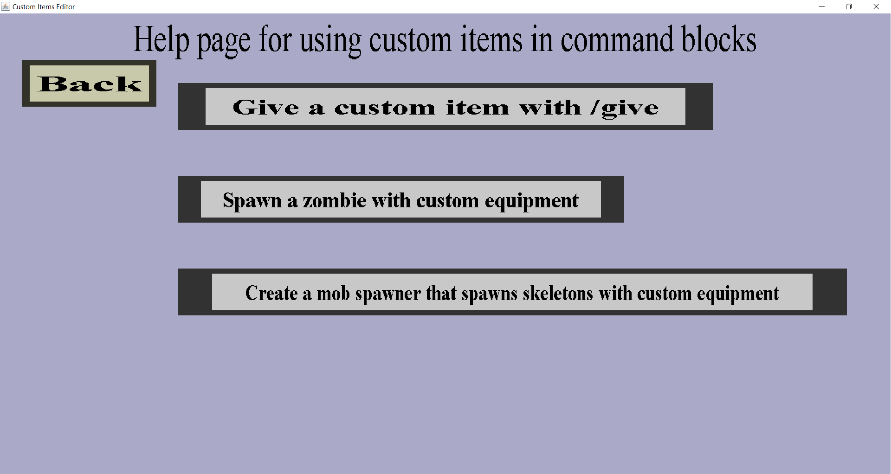

The command block help page is made to help developers with using custom items in commands like /give and /summon. It should look like this:
Currently, this page has a 'Back' button that will bring you back to the item overview as well as 3 buttons leading to pages for some example commands. I will not explain these pages any further because they contain a good description in the pages themselves.